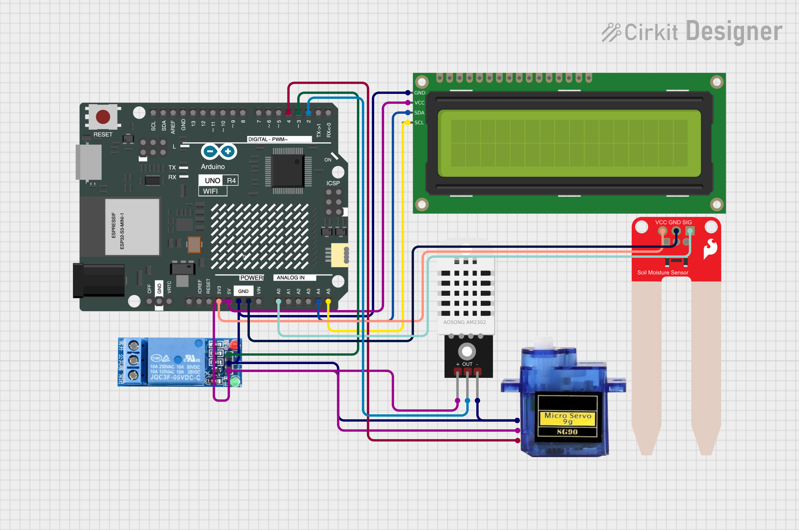

Welcome! My name is Avinash Maurya, and I am from Class 8. I have created the Ultimate Smart Irrigation System to assist farmers in areas where water is limited or electricity is available only at night. This innovative project leverages technology to optimize water usage and ensure efficient irrigation, even in challenging conditions. It is designed to make farming more sustainable and accessible, empowering farmers with tools to save time, water, and energy. Explore this page to learn more about the features and components that make this system a game-changer for modern agriculture.

Key Features
- Efficient water management using soil moisture sensors.
- Remote control through a dedicated web interface.
- Real-time monitoring and alerts.
- Integration with weather forecasting APIs.
- Scalable design for multiple farms.
- Automatic scheduling using timers.
- Energy-efficient operation with solar panels.
- Low maintenance with durable design.
- Data logging for moisture levels and pump usage.
Components Used
- Arduino R4 WiFi
- LCD I2C
- Relay Module
- DHT22 Sensor
- Soil Moisture Sensor
- Water Pump
- Servo Motor
- Wires
- Breadboard
- Cardboard
- Colorful Sheets
- Soil
Project Circuit Diagram
Below is the detailed circuit diagram for the Smart Village Irrigation System:

Top 5 Frequently Asked Questions
1. What is the purpose of the Smart Village Irrigation System?
The system aims to help farmers optimize water usage and ensure efficient irrigation, especially in areas with water scarcity or limited electricity availability.
2. How does the system manage water usage?
It uses soil moisture sensors to monitor the moisture levels and automatically activates the water pump when needed.
3. Can the system be controlled remotely?
Yes, the system includes a dedicated web interface that allows remote control and monitoring.
4. What are the power requirements for this system?
The system is energy-efficient and can operate using solar panels, making it sustainable for remote areas.
5. Is this system scalable for larger farms?
Yes, the design is scalable and can be customized to accommodate multiple farms or larger areas.